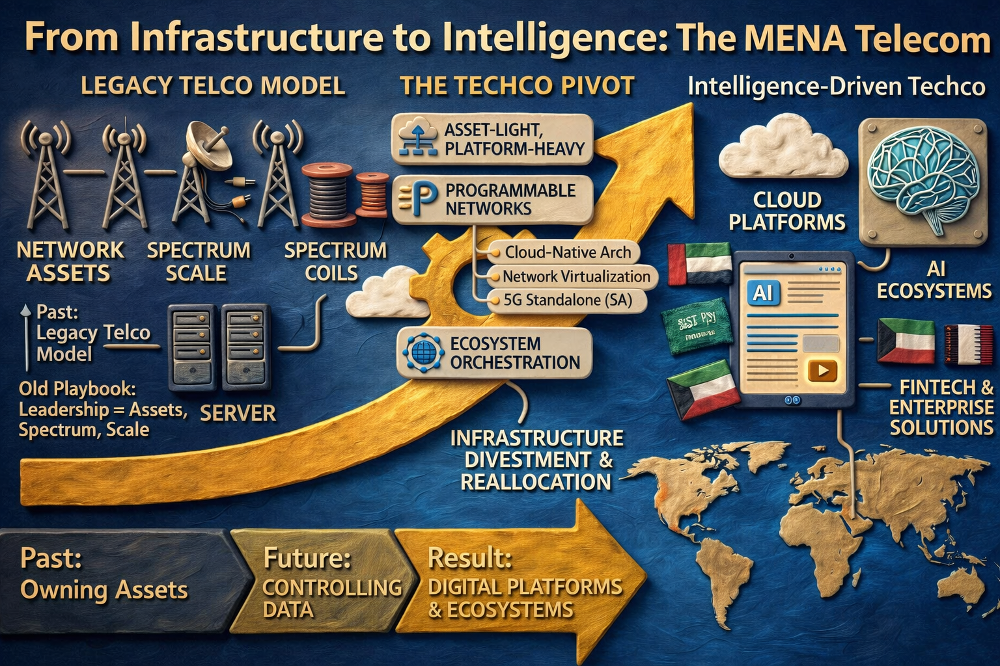

Research Broadcast
Telecom Research Log
Soft, focused research episodes on telecom operators, market signals, AI, and infrastructure shifts across the region.
Signal Strip
Regional telecom scenes and market context



Market Brief
A sharper view of MENA telecom growth
Follow the operators, revenue pressure, digital-service expansion, and infrastructure signals that shape the region's telecom market.
Research Streams
What the site tracks
Operator Growth
Interactive views for total growth, legacy services, and new-service momentum by operator.
Digital Services
Signals around AI, cloud, fintech, cybersecurity, and platform-led telecom revenue.
Infrastructure Shift
Coverage, fiber, network intelligence, and modernization patterns across the region.
Episodes
Research library
Open any episode to read the field note, hear narration, and inspect the visual research layer.